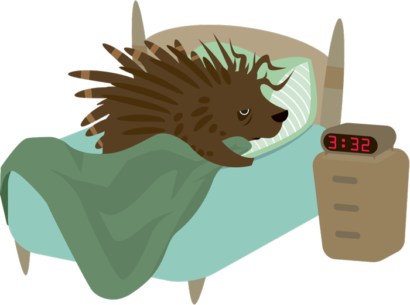
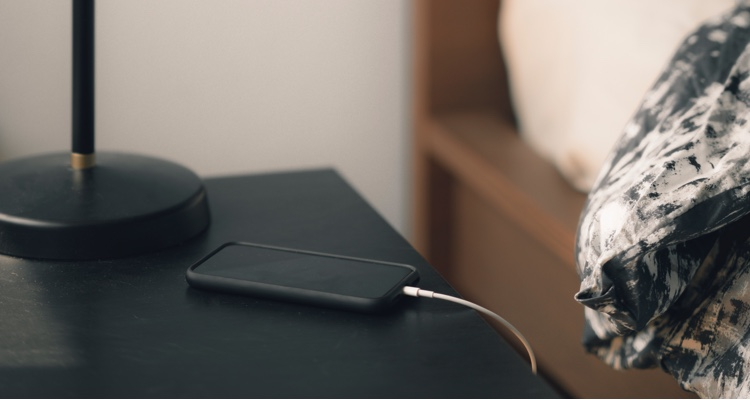

3 min read
A Good Night’s Sleep Could be the Key to Career Success
Is it hard to get out of bed for work each morning? Are you finding yourself dozing off in the late afternoon? Do you feel as though you are dragging through most of the day?
It is normal to have a day once in a while in which you would rather roll back into bed than go to work. However, if you find yourself having these days more often than you would like--and your productivity and work relationships are suffering--it may be time to make some changes.
Here are a few tips for getting a better night’s sleep:
- Watch what you eat and drink. Most sleep experts suggest avoiding caffeine in the afternoon, but other food and drink can also disturb your sleep patterns. Alcoholic drinks and spicy or fatty foods can affect your ability to fall and stay asleep. Look at what you eat on the nights you don’t sleep well and try to eliminate them from late-night consumption.
- Turn off and turn in early. Some sleep issues are caused by too much activity late in the evening. Experts have suggested that the light from computer screens and phones depress melatonin production, which makes it hard to fall and stay asleep. Even a few minutes on your phone to check email or texts before bed can result in a more difficult time going to sleep. Avoid eating, exercising, and using your phone or computer at least an hour--even longer if you can--before you go to bed.

- Practice mind and body relaxation strategies. Meditation, stretching, yoga, or deep breathing can all be used to help you relax before going to sleep. If you are a nighttime worrier, consider using more than one strategy to lessen the effects.
- Seek medical treatment if you have trouble improving your sleep. If you have worked through this list and are still having trouble getting a good night’s sleep, consider seeking medical treatment. You may have other issues that are keeping you from sleeping well.
Getting a good night’s sleep is not just healthy, it can have some or all of these positive effects on your career:
- Better stress management
- Improved productivity
- A stronger likelihood that you’ll set and reach long-term goals
When you feel better, and sleep better, you have more energy to work and think about work in a healthy way.